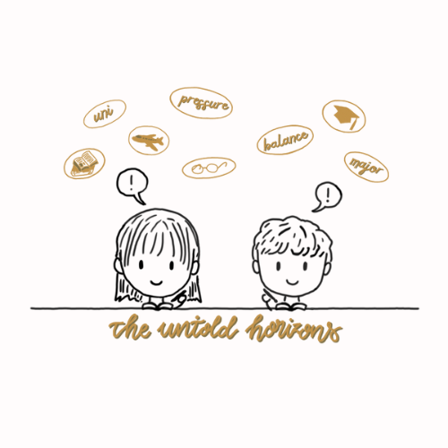

Bạn đã bao giờ gặp cảm giác này: Bạn cố gắng, cực nhọc cày bài trong suốt một năm học, cảm tưởng rằng đây là năm học khó nhất từ trước tới giờ của mình với quá nhiều bài vở, deadline, giáo viên nghiêm khắc,… Bạn tưởng chừng việc mình theo hết nổi chỉ là chuyện nay mai, học hoài học mãi mà vẫn chưa hết, và cảm giác nản chí đã lên đến đỉnh điểm…
Vậy nhưng mà: Bạn lại một lần nữa hoàn thành xuất sắc một năm học. Nhìn lại hành trình đã qua, bạn thấy sao 9 tháng đi học lại trôi nhanh và nhẹ nhàng như thế. Những cảm giác tiêu cực, áp lực trong quá trình phấn đấu bỗng chốc tan biến…
Chuyện gì đã xảy ra? Tại sao ở mỗi giai đoạn khác nhau chúng ta lại nhìn cùng một thử thách với thái độ khác biệt đến vậy?

Cảm giác ấy xảy ra với mình gần như là hằng năm kể từ khi mình có chút nhận thức về những thử thách và việc mình cần phải đương đầu với khó khăn để phát triển tốt hơn. Không rõ mọi người cảm thấy thế nào, có để ý cái pattern đó giống như mình không nhỉ? Sau đây là những suy đoán của mình để lý giải sự thay đổi mindset và góc nhìn này. Mình sẽ cố gắng update cho các bạn nếu tìm được những kết quả khoa học để có nguồn thông tin đáng tin cậy hơn, còn bây giờ đa số sẽ là cảm giác chủ quan của mình bạn nha!
- Trước thử thách: Mình vẫn đang ở trong comfort zone - vùng an toàn của bản thân. Mình cảm thấy dễ chịu, thoải mái, và quen thuộc với những thứ xảy ra xung quanh cuộc sống của mình. Mình có thể cảm thấy chưa hài lòng về bản thân, cảm thấy tẻ nhạt, unproductive hoặc không (tùy lúc), nhưng chung quy lại mọi thứ đang tiếp diễn vẫn đang nằm trong tầm kiểm soát.
- Trong thử thách: Mình đối mặt với một hoặc nhiều nhân tố xa lạ, chưa nằm trong comfort zone của mình. Bước ra khỏi comfort zone, mình cảm thấy lạ lẫm, mất cân bằng, và hơi choáng ngợp với những gì sắp ập tới. Nếu ví comfort zone của mình là một ngôi nhà đơn độc giữa rừng sâu, việc bước ra khỏi comfort zone cũng giống như việc mình ra khỏi nhà lần đầu tiên để lấy thức ăn hay lấy gỗ, tiến vào khu rừng vừa tối vừa nguy hiểm, trong lòng nơm nớp lo sợ không biết liệu có bẫy hay sẽ có những con thú nguy hiểm nào lăm le vồ lấy. Ở tình cảnh đó thì sao mà không sợ cho được, rõ ràng là khu rừng có quá nhiều thứ nguy hiểm và thậm chí là nhiều sinh vật có khi mình chưa được biết tới. Mình dễ mắc sai lầm hơn vì chưa thạo địa hình. Mọi thứ trở nên khó khăn gấp bội, bởi con đường phía trước thì cứ tăm tối và ghê rợn, nhưng mà đứng yên thì càng không được vì càng dễ làm mồi cho thú dữ. Mình phải vừa đi vừa học để hiểu hơn về khu rừng, tiến gần đến mục tiêu. Mình bật chế độ try hard, loay hoay tìm cơ chế sinh tồn nơi xa lạ này. Mà thời gian vẫn cứ trôi, nên so với ở nhà thì ở nơi này, mình hao sức hơn, đặc biệt là về tinh thần, để đốc thúc bản thân hoàn thành cho đúng tiến độ.
- Sau thử thách: Với nhiều nỗ lực và nghị lực, mình đã thành công lấy gỗ và thức ăn về nhà! Không chỉ có đồ để no bụng và sưởi ấm, mình còn mang về biết bao nhiêu là vật liệu khác, cũng như vốn sống và kinh nghiệm sinh tồn trong khu rừng đó. Mình có thể mở rộng đất và xây căn nhà to hơn. Comfort zone của mình được nới rộng bởi những thứ mình lượm lặt được suốt trong quá trình thực hiện thử thách. Mình có nhiều thứ hơn và sống thoải mái hơn. Nhìn lại tuyến đường vừa đi, mình phần nào tự tin rằng mình đã biết chỗ nào có nấm độc, có thú dữ, chỗ nào an toàn để đi. Biết rằng trong tương lai sinh vật trên con đường đó có thể thay đổi, nhưng ít nhất là mình đã có kinh nghiệm, đã rành đường, và cảm thấy con đường mình vừa chinh phục là chuyện thường thôi.
Một năm học hay một thử thách ở độ tuổi chúng mình đương nhiên sẽ không đáng sợ đến mức phóng đại như câu chuyện căn nhà và rừng sâu ở trên, chưa kể rằng bình thường chúng ta sẽ luôn có bạn bè hay người thân động viên và giúp đỡ về mặt tinh thần chứ không chiến đấu đơn độc như ví dụ trên. Nhưng cũng không thể phủ nhận rằng dù thử thách có là to hay nhỏ đi chăng nữa, nó phần nào cũng đã giúp chúng mình bước ra khỏi vùng an toàn và phát triển bản thân. Vùng an toàn của tụi mình càng mở rộng, tiềm lực của tụi mình càng lớn. Trải qua càng nhiều thứ, tâm lý tụi mình càng “mạnh”. Việc vượt qua thử thách thế nào, có thành công hay không còn phụ thuộc vào tâm lý và thái độ của mỗi người khi đối mặt với khó khăn. Nhưng một khi đã vượt qua được rồi, chúng ta sẽ nhận ra điều đó không đáng sợ và khó như mình nghĩ.
Thử thách là một phần của cuộc sống mà, nếu thiếu nó thì có khi tụi mình cũng không chịu vận động và thoát khỏi comfort zone đâu! Leo dốc sẽ mệt sức, nhưng mà leo lên được dốc tức là chinh phục được thêm một đỉnh mới. Vậy nên là, nếu bạn vẫn còn đang chật vật với điều gì đó, hãy cứ vững tin và tiếp tục bền bỉ, vì nhiều khi đích đến chỉ còn cách bạn một vài bước nữa thôi!